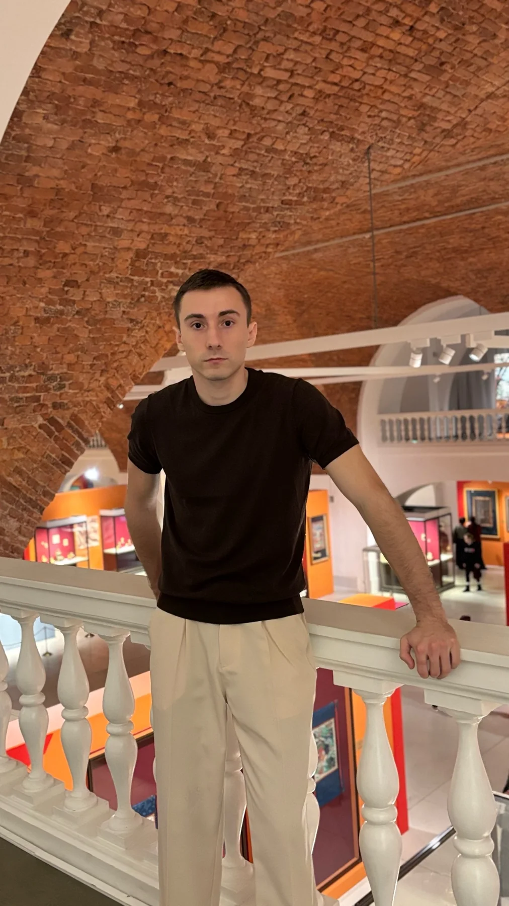
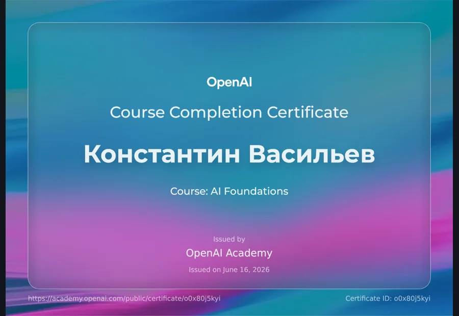
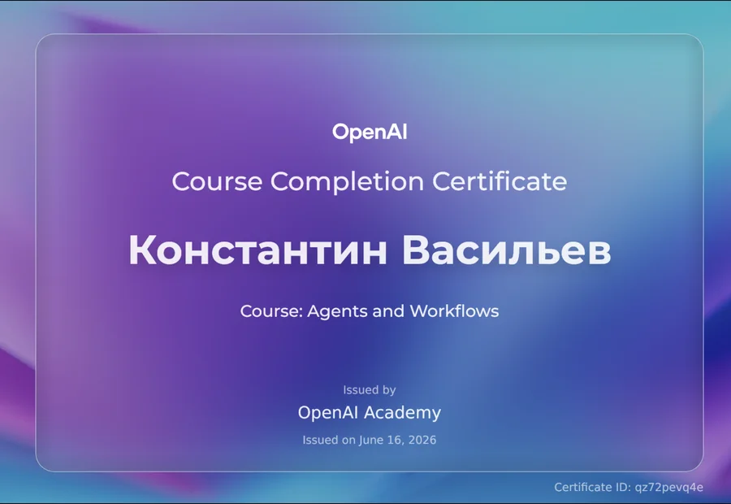
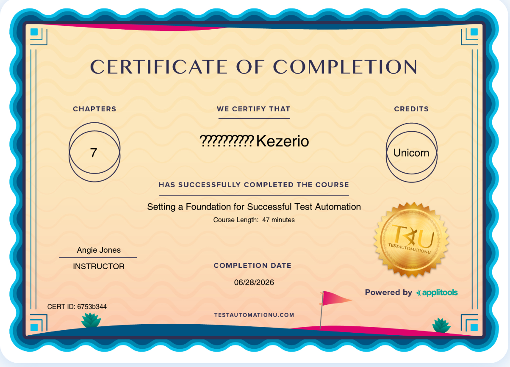

Техническая поддержка
Разбирал обращения, проверял сети и устройства, фиксировал результат и объяснял решение понятным языком.
QA · SUPPORT · AI · GAME
SAINT PETERSBURG / REMOTE
 KONSTANTIN
KONSTANTINРаботаю в технической поддержке и развиваюсь в QA. Люблю докапываться до причины, проверять факты и оставлять после себя понятный результат.
КРАТКО ОБО МНЕ / 01
Мне знакома ситуация, когда человек говорит: «всё сломалось», а причины пока никто не знает. Я собираю контекст, повторяю сценарий, проверяю настройки и фиксирую результат так, чтобы следующему специалисту не пришлось начинать сначала.
ПРОЕКТЫ И ПРАКТИКА / 02
Собственная Android-игра. Я прошёл путь от идеи и сборки до проверки на телефоне и публикации в RuStore.
UNITY · GAME QA · RETESTБаг-репорты, expected / actual, чек-листы и тест-планы. Без абстракций, с условиями и доказательствами.
WEB · API · EVIDENCEПрактическая лаборатория, где я работаю с HTTP, JSON, REST API и проверяю разные сценарии.
BUILD · BREAK · LEARN
NOTЧЕЛОВЕК ЗА РЕЗЮМЕ / 03
Поддержка научила меня слышать людей и задавать точные вопросы. Телеком дал понимание систем и интеграций. Армия и спорт научили не бросать задачу, когда стало трудно. Игровые и AI-проекты помогают сохранять любопытство.
ЗОНА РОСТА / 04
Разбирал обращения, проверял сети и устройства, фиксировал результат и объяснял решение понятным языком.
Работаю с телефонией, виртуальной АТС, CRM-интеграциями и техническими обращениями. Передаю инженерные задачи с собранным контекстом.
Делаю QA-материалы, проверяю API, собираю игровые прототипы и изучаю оценку качества AI-систем.
Хочу отвечать за качество продукта в команде, где ценят наблюдательность, честность и понятный результат.
ОБУЧЕНИЕ / 05

Сертификат о прохождении курса

Сертификат о прохождении курса

Сертификат о прохождении курса
РАБОЧИЙ НАБОР / 06
Нажмите на навык. Интерфейс тоже должен отвечать на действие.
МОЖНО ПРОСТО НАПИСАТЬ / 07
Интересны позиции QA, AI QA, Game QA и технические роли, где пригодятся диагностика, поддержка и работа с интеграциями.